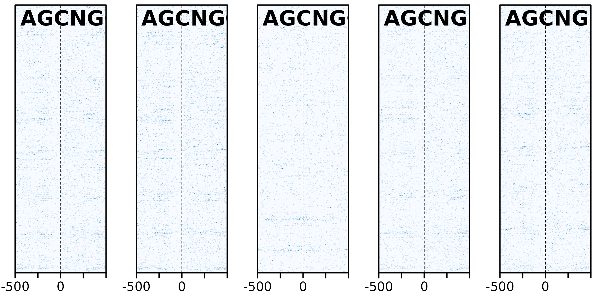

Genomic features of the breakpoints (heatmaps)
Charlotte West
Charles Plessy
13 October, 2023
Source:vignettes/GenomicHeatmaps.Rmd
GenomicHeatmaps.RmdLoad packages and data
See ?OikScrambling:::loadAllGenomes,
?OikScrambling:::loadAllTranscriptsGR, and
vignette("LoadGenomicBreaks", package = "OikScrambling")
for how the different objects are prepared.
library('OikScrambling') |> suppressPackageStartupMessages()
library('GenomicFeatures') |> suppressPackageStartupMessages()
library('heatmaps') |> suppressPackageStartupMessages()
library('patchwork') |> suppressPackageStartupMessages()
genomes <- OikScrambling:::loadAllGenomes(compat = F)## Warning in runHook(".onLoad", env, package.lib, package): input string
## 'Génoscope' cannot be translated from 'ANSI_X3.4-1968' to UTF-8, but is valid
## UTF-8
## Warning in runHook(".onLoad", env, package.lib, package): input string
## 'Génoscope' cannot be translated from 'ANSI_X3.4-1968' to UTF-8, but is valid
## UTF-8
# Cannot use Knitr cache as long as "annot" objects are used.
annots <- OikScrambling:::loadAllAnnotations() |> suppressWarnings()
reps <- OikScrambling:::loadAllRepeats(compat = F)
genes <- sapply(annots, function(a) sort(genes(a))) |> SimpleList()
load("BreakPoints.Rdata")
requireNamespace("rGADEM") |> suppressPackageStartupMessages()
requireNamespace("ggseqlogo") |> suppressPackageStartupMessages()
ces <- readRDS("CEs.Rds")
tfbs <- readRDS("pwmMatchesOki_12_95.Rds")Nucleic acid content heatmaps
The GenomicBreaks::bp_heatmap() function plots nucleic
acid content in windows centered on alignment stops.
GC
Lets look at GC content before and after coalescing:
maxHeight <- 2000
sm_GC2 <- sapply(coa[1:15], bp_heatmap, win = 1000, pat = "GC", direction = "left") |>
sapply(smoothHeatmap, output.size = c(maxHeight, 500), algorithm = "kernel") |> SimpleList()
plotHeatmapList(sm_GC2[1:5])The alignment stops are ordered in such a way that start (or left breaks) are centred on the top half of the plot, and end alignment stops are centred on the bottom. This is why we see different directionality in the plots. At the alignment stops, the GC content seems to be lower, but higher once within the aligned region, except for the Oki – Kum pair.
TATA
Now looking at TATA content:
maxHeight <- 2000
sm_GC2_TATA <- sapply(coa[1:15], bp_heatmap, window = 1000, pat = "TATA", direction = "left") |>
sapply(smoothHeatmap, output.size = c(maxHeight, 500), algorithm = "kernel") |> SimpleList()
plotHeatmapList(sm_GC2_TATA[1:5])The directionaility here is consistent with the GC
content analysis. Furthermore; “TATA box sequence can act as a basal
promoter element not only for RNA polymerase II (RNAP II) transcription,
but also for transcription by RNA polymerase III (RNAP III)” - Wang Y,
Jensen RC, Stumph WE. Role of TATA box sequence and orientation in
determining RNA polymerase II/III transcription specificity. Nucleic
Acids Res. 1996;24(15):3100–3106. doi:10.1093/nar/24.15.3100. However, the areas are not
particularly enriched for TATA boxes, so it does not necessarily show
that breakpoints are occurring directly after promoter regions.
maxHeight <- 2000
sm_GC2_mot <- sapply(coa[1:15], bp_heatmap, window = 1000, pat = "AGCNGC", direction = "left") |>
sapply(smoothHeatmap, output.size = c(maxHeight, 500), algorithm = "kernel") |> SimpleList()
plotHeatmapList(sm_GC2_mot[1:5])
Cluster analysis
# # Accessory functions
# clusterHeatmap <- function(hm, k = 2) kmeans(image(hm), k)
#
# orderHeatmap <- function(hm, cl) {
# image(hm) <- image(hm)[order(cl$cluster),]
# hm
# }
#
# subsetHeatmap <- function(hm, bool) {
# image(hm) <- image(hm)[bool,]
# hm
# }
#
# # DAta
# hm_GC <- bp_heatmap( gr_Oki_O, basep_range = 1000, pat = "GC", direction = "left")
# hm_TATA <- bp_heatmap( gr_Oki_O, basep_range = 1000, pat = "TATA", direction = "left")
# hm_tan <- feature_coverage(gr_Oki_O, tan_Oki, win = 1000, lab = "Tandem", direction = "left")
#
# # Define 3 K-mean clusters
# clusterHeatmap(hm_GC, 3) -> hm_cl_k4
#
# # Order and smooth
# shm_GC <- orderHeatmap(hm_GC, hm_cl_k4) %>%
# smoothHeatmap(output.size = c(2000,500), algorithm = "kernel")
#
# shm_TATA <- orderHeatmap(hm_TATA, hm_cl_k4) %>%
# smoothHeatmap(output.size = c(2000,500), algorithm = "kernel")
#
# shm_tan <- orderHeatmap(hm_tan, hm_cl_k4) %>%
# smoothHeatmap(output.size = c(2000,500), algorithm = "kernel")
#
# # Plot the ordered data
# plotHeatmapList(list(shm_GC, shm_TATA, shm_tan))
# par(mfrow = c(1,1)) # plotHeatmapList messes with mrfrow...
# plotHeatmapMeta(list(hm_GC, hm_TATA, hm_tan))
#
# plotHeatmapMeta(list(subsetHeatmap(hm_GC, hm_cl_k4$cluster == 1),
# subsetHeatmap(hm_GC, hm_cl_k4$cluster == 2),
# subsetHeatmap(hm_GC, hm_cl_k4$cluster == 3)))
#
# kmeanOrderedPlot <- function (hm, k=3, seed = 1) {
# set.seed(seed)
#
# cl <- kmeans(image(hm), k)
# mat <- image(hm)[order(cl$cluster),]
#
# kmhm = Heatmap(
# mat,
# coords=c(-500,500),
# label="kmeans",
# scale=range(mat))
#
# plotHeatmapList(kmhm,
# cex.label=1.5,
# partition=as.vector(table(cl$cluster)),
# partition.legend=TRUE,
# partition.lines=TRUE,
# legend=TRUE,
# legend.pos="r",
# legend.width=0.3)
# }
#
# kmeanOrderedPlot(shm_GC)Evidence for breakpoint hotspots
The function ?GenomicBreaks::bp_pair_analysis takes two
pairwise alignments with the same target genome, and plots the alignment
stops on to the centred alignment stops of the other.
In the plot below, Osaka is there consistent target genome, and as such acts as a coordinate system to relate alignment stops across genomes. Lets produce two of these 3-way analyses; one between Osaka-Okinawa-Norway, and one between Osaka-Okinawa-Aomori.
bp_pair_analysis(gbs$Osa_Oki, gbs$Osa_Nor, win = 1000, lab = "Oki~Nor") |> plotHeatmapMeta()
bp_pair_analysis(gbs$Osa_Oki, gbs$Osa_Aom, win = 1000, lab = "Oki~Aom") |> plotHeatmapMeta()The accumulation of alignment breaks of one pairwise alignment onto another suggests the existence of breakpoint hotspots; regions where breaks are far more likely to occur. Intuitively, this would lead to the presumption of synteny blocks, also. The pattern is consistent after coalescing, too;
bp_pair_analysis(coa$Osa_Oki, coa$Osa_Nor, win = 1000, lab = "Oki~Nor") |> plotHeatmapMeta()
bp_pair_analysis(coa$Osa_Oki, coa$Osa_Aom, win = 1000, lab = "Oki~Aom") |> plotHeatmapMeta()
Session information
## R version 4.3.1 (2023-06-16)
## Platform: x86_64-pc-linux-gnu (64-bit)
## Running under: Debian GNU/Linux 12 (bookworm)
##
## Matrix products: default
## BLAS: /usr/lib/x86_64-linux-gnu/blas/libblas.so.3.11.0
## LAPACK: /usr/lib/x86_64-linux-gnu/lapack/liblapack.so.3.11.0
##
## locale:
## [1] LC_CTYPE=C.UTF-8 LC_NUMERIC=C LC_TIME=C.UTF-8
## [4] LC_COLLATE=C.UTF-8 LC_MONETARY=C.UTF-8 LC_MESSAGES=C.UTF-8
## [7] LC_PAPER=C.UTF-8 LC_NAME=C LC_ADDRESS=C
## [10] LC_TELEPHONE=C LC_MEASUREMENT=C.UTF-8 LC_IDENTIFICATION=C
##
## time zone: Etc/UTC
## tzcode source: system (glibc)
##
## attached base packages:
## [1] stats4 stats graphics grDevices utils datasets methods
## [8] base
##
## other attached packages:
## [1] BSgenome.Oidioi.genoscope.OdB3_1.0.0
## [2] BSgenome.Oidioi.OIST.AOM.5.5f_1.0.1
## [3] BSgenome.Oidioi.OIST.KUM.M3.7f_1.0.1
## [4] BSgenome.Oidioi.OIST.Bar2.p4_1.0.1
## [5] BSgenome.Oidioi.OIST.OSKA2016v1.9_1.0.0
## [6] BSgenome.Oidioi.OIST.OKI2018.I69_1.0.1
## [7] patchwork_1.1.2
## [8] heatmaps_1.24.0
## [9] GenomicFeatures_1.52.1
## [10] AnnotationDbi_1.62.2
## [11] Biobase_2.60.0
## [12] OikScrambling_5.0.0
## [13] ggplot2_3.4.3
## [14] GenomicBreaks_0.14.2
## [15] BSgenome_1.68.0
## [16] rtracklayer_1.60.0
## [17] Biostrings_2.68.1
## [18] XVector_0.40.0
## [19] GenomicRanges_1.52.0
## [20] GenomeInfoDb_1.36.1
## [21] IRanges_2.34.1
## [22] S4Vectors_0.38.1
## [23] BiocGenerics_0.46.0
##
## loaded via a namespace (and not attached):
## [1] splines_4.3.1 BiocIO_1.10.0
## [3] filelock_1.0.2 bitops_1.0-7
## [5] tibble_3.2.1 R.oo_1.25.0
## [7] XML_3.99-0.14 rpart_4.1.19
## [9] rGADEM_2.48.0 lifecycle_1.0.3
## [11] rprojroot_2.0.3 lattice_0.20-45
## [13] MASS_7.3-58.2 backports_1.4.1
## [15] magrittr_2.0.3 Hmisc_5.1-0
## [17] sass_0.4.7 rmarkdown_2.23
## [19] jquerylib_0.1.4 yaml_2.3.7
## [21] plotrix_3.8-2 DBI_1.1.3
## [23] CNEr_1.36.0 minqa_1.2.5
## [25] RColorBrewer_1.1-3 ade4_1.7-22
## [27] abind_1.4-5 zlibbioc_1.46.0
## [29] purrr_1.0.2 R.utils_2.12.2
## [31] RCurl_1.98-1.12 nnet_7.3-18
## [33] pracma_2.4.2 rappdirs_0.3.3
## [35] GenomeInfoDbData_1.2.10 seqLogo_1.66.0
## [37] gdata_2.19.0 annotate_1.78.0
## [39] pkgdown_2.0.7 codetools_0.2-19
## [41] DelayedArray_0.26.7 xml2_1.3.5
## [43] tidyselect_1.2.0 shape_1.4.6
## [45] ggseqlogo_0.1 lme4_1.1-34
## [47] BiocFileCache_2.8.0 matrixStats_1.0.0
## [49] base64enc_0.1-3 GenomicAlignments_1.36.0
## [51] jsonlite_1.8.7 mitml_0.4-5
## [53] Formula_1.2-5 survival_3.5-3
## [55] iterators_1.0.14 systemfonts_1.0.5
## [57] foreach_1.5.2 progress_1.2.2
## [59] tools_4.3.1 ragg_1.2.5
## [61] Rcpp_1.0.11 glue_1.6.2
## [63] gridExtra_2.3 pan_1.8
## [65] xfun_0.40 MatrixGenerics_1.12.2
## [67] EBImage_4.42.0 dplyr_1.1.3
## [69] withr_2.5.1 fastmap_1.1.1
## [71] boot_1.3-28.1 fansi_1.0.5
## [73] digest_0.6.33 R6_2.5.1
## [75] mice_3.16.0 textshaping_0.3.7
## [77] colorspace_2.1-0 GO.db_3.17.0
## [79] gtools_3.9.4 poweRlaw_0.70.6
## [81] jpeg_0.1-10 biomaRt_2.56.1
## [83] RSQLite_2.3.1 weights_1.0.4
## [85] R.methodsS3_1.8.2 utf8_1.2.3
## [87] tidyr_1.3.0 generics_0.1.3
## [89] data.table_1.14.8 prettyunits_1.2.0
## [91] httr_1.4.7 htmlwidgets_1.6.2
## [93] S4Arrays_1.0.5 pkgconfig_2.0.3
## [95] gtable_0.3.4 blob_1.2.4
## [97] htmltools_0.5.6.1 fftwtools_0.9-11
## [99] scales_1.2.1 png_0.1-8
## [101] knitr_1.44 rstudioapi_0.15.0
## [103] tzdb_0.4.0 reshape2_1.4.4
## [105] rjson_0.2.21 curl_5.1.0
## [107] checkmate_2.2.0 nlme_3.1-162
## [109] nloptr_2.0.3 cachem_1.0.8
## [111] stringr_1.5.0 KernSmooth_2.23-20
## [113] parallel_4.3.1 genoPlotR_0.8.11
## [115] foreign_0.8-84 restfulr_0.0.15
## [117] desc_1.4.2 pillar_1.9.0
## [119] grid_4.3.1 vctrs_0.6.3
## [121] jomo_2.7-6 dbplyr_2.3.3
## [123] xtable_1.8-4 cluster_2.1.4
## [125] htmlTable_2.4.1 evaluate_0.22
## [127] readr_2.1.4 cli_3.6.1
## [129] locfit_1.5-9.8 compiler_4.3.1
## [131] Rsamtools_2.16.0 rlang_1.1.1
## [133] crayon_1.5.2 plyr_1.8.8
## [135] fs_1.6.3 stringi_1.7.12
## [137] BiocParallel_1.34.2 munsell_0.5.0
## [139] tiff_0.1-11 glmnet_4.1-7
## [141] Matrix_1.5-3 hms_1.1.3
## [143] bit64_4.0.5 KEGGREST_1.40.0
## [145] SummarizedExperiment_1.30.2 broom_1.0.5
## [147] memoise_2.0.1 bslib_0.5.1
## [149] bit_4.0.5